Otofuke
Otofuke · Hokkaido
Otofuke
Highlighted on the Hokkaido map.
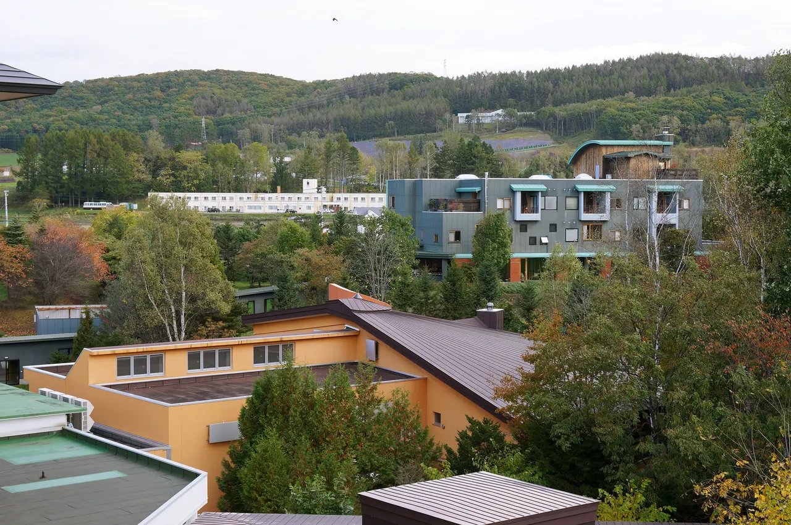
Stay
天然温泉 ホテル鳳乃舞音更
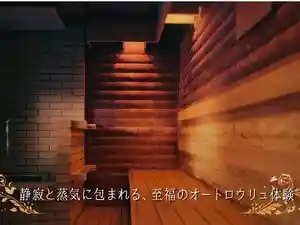
Tennen Onsen Hoteru Ootori No Mai Otofuke
クロスコートホテル
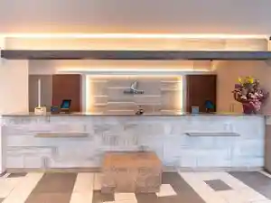
Kurosukootohoteru
ＴＯＷＡの家
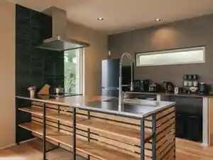
T O W A No Ie
そととまり帯広音更
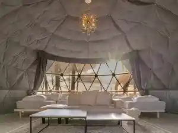
Sototomari Obihiro Otofuke
ホテルアルムＩＮオトフケ
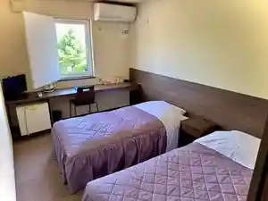
Hoteruarumu I N Otofuke
Dining
山の猿 音更店
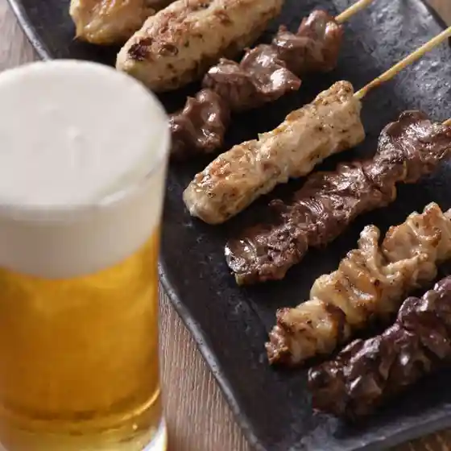
Yama No Saru Otofuke Mise
旬の野菜と焼肉 大地の匠
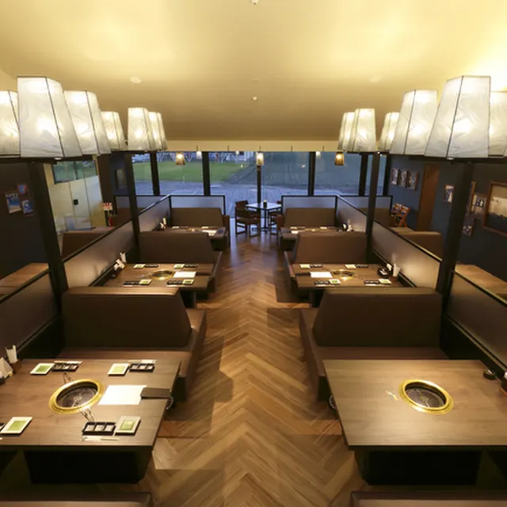
Jun No Yasai To Yakiniku Daichi No Takumi
天然温泉ホテル 鳳乃舞 音更
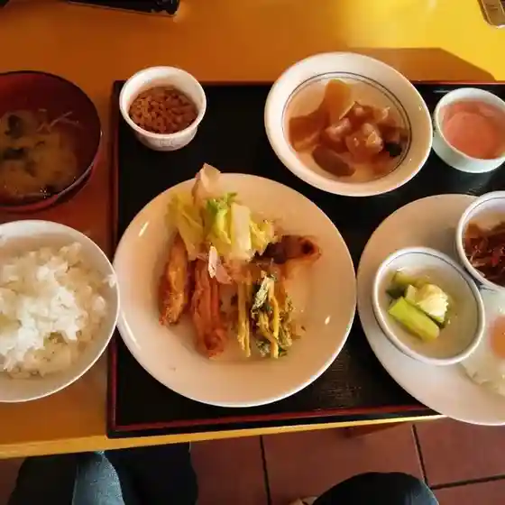
Tennen Onsen Hoteru Ootori No Mai Otofuke
十勝川温泉 第一ホテル 豊洲亭
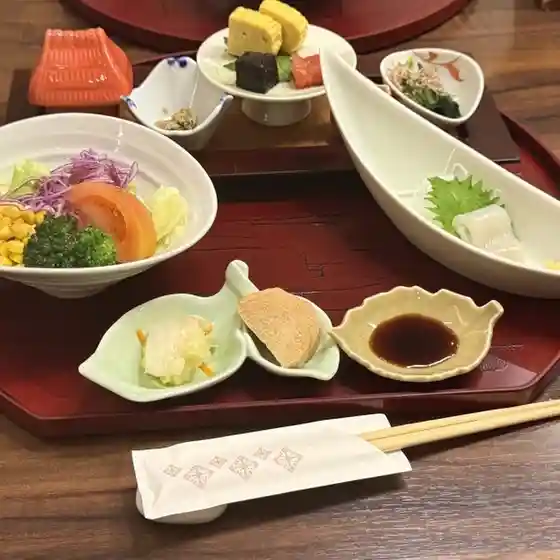
Tokachigawa Onsen Daiichihoteru Toyosu Tei
平和園 士幌店
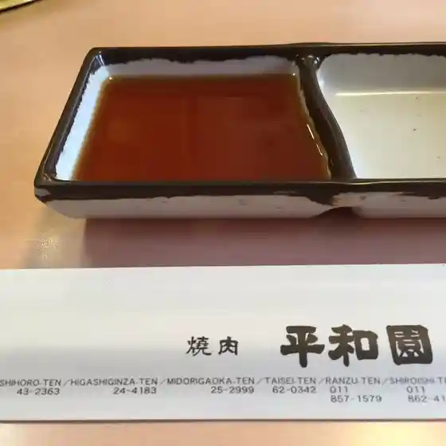
Heiwa Sono Shihoro Mise
小料理屋べん
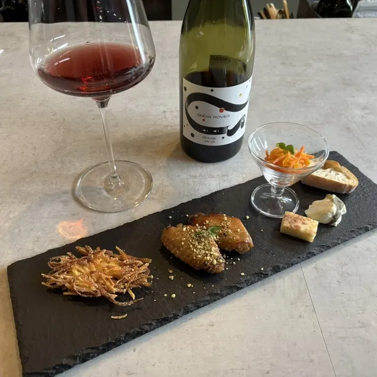
Koryouriya Ben
シェルプール 喫茶コーナー
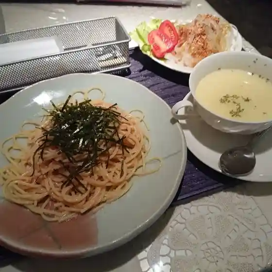
Shierupuuru Kissa Koonaa
ほっともっと 音更店
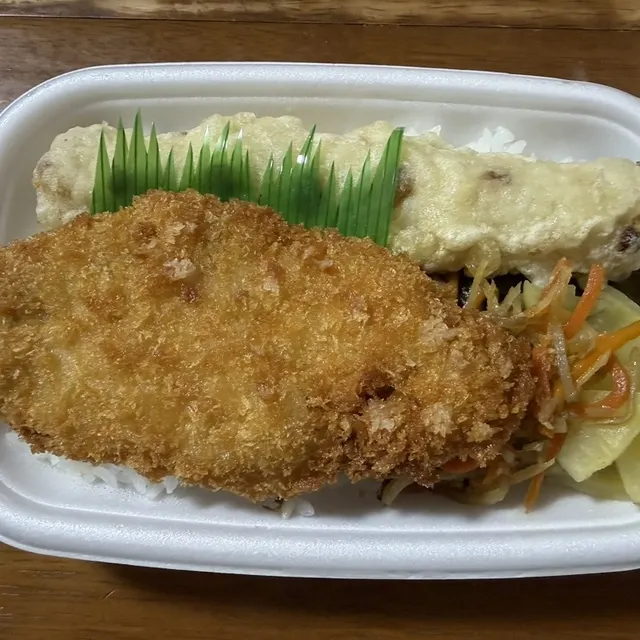
Hottomotto Otofuke Mise
みなと庵
Minato Iori
鳥料理 伊藤 緑陽台店
Tori Ryouri Itou Midori Youdai Mise
焼肉しぶさん
Yakiniku Shibusan
珈琲専科 ヨシダ ハピオ店
Koohii Senka Yoshida Hapio Mise
うどん 麦笑 壱咲
Udon Mugi Warai Ichi Saki
イージーリビングテラス B&B
Iijiiribinguterasu B&B
昇月食堂
Noboru Gesshoku Dou
OMAYA GRAND CEYLON
Omaya Grand Ceylon
田楽
Dengaku
道の駅 ガーデンスパ十勝川温泉
Michi No Eki Gaadensupa Tokachigawa Onsen
勇三
Yuuzou
セイコーマート 音更店
Seikoomaato Otofuke Mise
bis cafe
Bis Cafe
帯広リゾートホテル
Obihiro Rizootohoteru
お弁当屋 あぶらびれ
O Bentouya Aburabire
ドトールコーヒーショップ 岡書おとふけ木野店
Dotoorukoohiishoppu Oka Kaki Otofuke Kino Mise